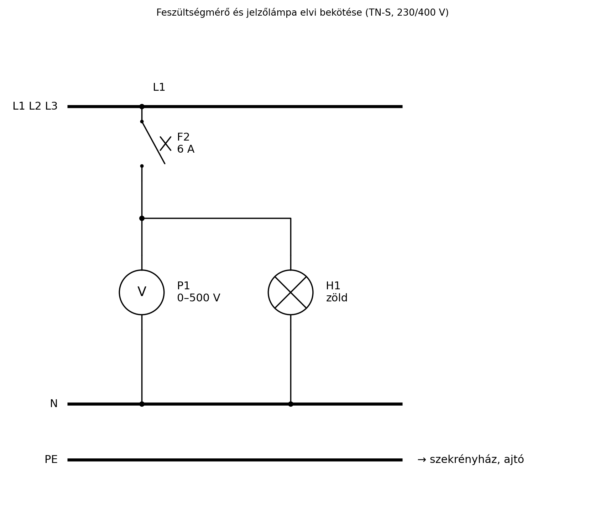
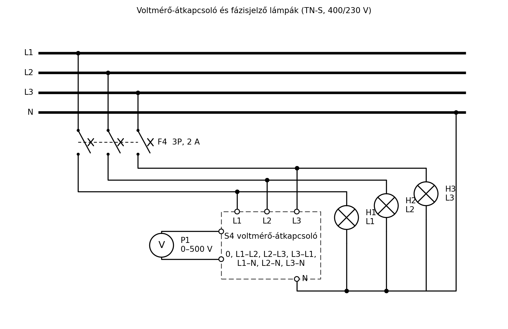
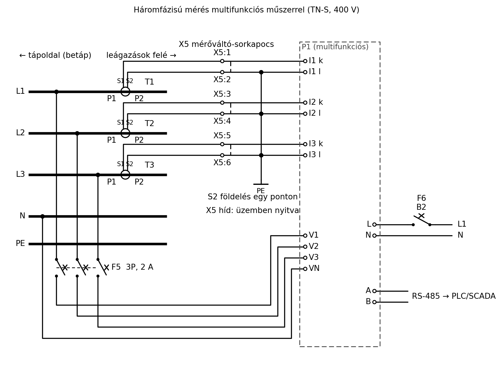

Amikor egy ipari kapcsolószekrényt vagy lakáselosztót átadunk, a megrendelő gyakran először nem a kapcsolási rajzot nézi, hanem az ajtót: van-e benne feszültségmérő, ampermérő, világítanak-e a jelzőlámpák. Neki ezek a műszerek jelentik az üzem közbeni visszajelzést. Ha a műszer rosszul van kiválasztva, rosszul van bekötve, vagy a felirata nem egyezik a rajzzal, akkor a karbantartó később téves következtetést vonhat le, rossz áramkört kapcsolhat le, vagy éppen hibát nem vesz észre. Ezért ebben az alfejezetben a mérő- és jelzőkészülékek kiválasztását, feliratozását, valamint a kapcsolószekrény teljes dokumentációjának összeállítását járjuk körül.
Képzeljünk el egy elosztóajtót, ahol a következők vannak elhelyezve:

A rajz azt mutatja, hogy a feszültségmérőt és a jelzőlámpát egyaránt az F2 kimenete (fázis) és az N-sín közé kötjük; a PE-sín a szekrény fémházát és ajtaját köti be. Az F2 kismegszakító a mérő- és jelzőkörök védelmét látja el, így a műszerköri hiba nem veszélyezteti a teljes elosztót. A valós elosztóban a feszültségmérő lehet átkapcsolóval ellátott háromfázisú műszer is, amellyel az L1, L2 és L3 feszültségeket egyetlen műszerrel váltogatva ellenőrizzük.
Voltmérő-átkapcsoló és fázisjelző lámpák. A hagyományos, analóg ajtóműszeres elosztókban – amelyekkel a karbantartó ma is gyakran találkozik – egyetlen P1 voltmérő és egy S4 hétállású átkapcsoló méri mind a hat feszültséget, mellette három jelzőlámpa (H1–H3) mutatja, hogy mindhárom fázis jelen van. Az alábbi rajz ennek bekötését mutatja: a mérő- és jelzőkör saját F4 háromfázisú védelemmel (2 A) csatlakozik a sínekre.

| Állás | P1 mit mér | Várt érték |
|---|---|---|
| 0 | semmit (a műszer leválasztva) | 0 V |
| L1–L2 | vonali feszültség | ≈ 400 V |
| L2–L3 | vonali feszültség | ≈ 400 V |
| L3–L1 | vonali feszültség | ≈ 400 V |
| L1–N | fázisfeszültség | ≈ 230 V |
| L2–N | fázisfeszültség | ≈ 230 V |
| L3–N | fázisfeszültség | ≈ 230 V |
Az átkapcsoló belső felépítése gyártófüggő, ezért a bekötést mindig a gyártói kapocsrajz szerint végezd; a rajz csak a kivezetések szerepét mutatja. Az N-bemenetet az N-sínre kell kötni, nem a PE-re: a PE-re kötött N-bemenetnél a fázisfeszültség-állásokban a műszer a PE-n át mér, és üzemszerűen áram nem folyhat a védővezetőn. A fázisjelző lámpák egy fázis kiesését jelzik, de a feszültségmentesség megállapítására nem alkalmasak (egy kiégett lámpa „feszültségmentességet” mutatna): a feszültségmentességet az öt biztonsági szabály szerint kétpólusú feszültségvizsgálóval ellenőrzöd.
Feladat (B). Az átkapcsoló L1–L2 állásában 400 V-ot, L2–L3 állásában 230 V-ot, L3–L1 állásában 230 V-ot, L3–N állásában 0 V-ot mérsz. Mi a hiba? Megoldás: az L3 fázis kiesett (például a betápnál vagy az F4 harmadik pólusán túl). Az L3 vezető ekkor „lebeg”: a H3 lámpán és a csatlakozó fogyasztókon keresztül az N potenciáljára húzódik (visszatáplálás a terhelésen át), ezért az L3–N állásban 0 V, az L2–L3 és L3–L1 állásban pedig a fázisfeszültséghez közeli érték mérhető. A hibát az F4-nél és a betápnál kell keresni – a betáp oldali hibakeresés jogosult személy feladata.
Definíció. Az elosztóba beépített mérőműszer olyan készülék, amely a kapcsolóberendezés valamely villamos jellemzőjét – feszültséget, áramot, teljesítményt, energiát, frekvenciát – folyamatosan vagy kiértékelhető módon megjeleníti az üzemeltető vagy a karbantartó számára.
A leggyakoribb elosztóban használt mérő- és jelzőkészülékek:
| Jelölés | Készülék | Mit mutat, mire való |
|---|---|---|
| P1 | Feszültségmérő (voltmérő) | A gyűjtősín vagy leágazás feszültségét mutatja; feszültség alatti állapot és fáziskimaradás jelzésére is használható. |
| P2 | Ampermérő (árammérő) | Az egyes leágazások áramfelvételét mutatja; segít felismerni a túlterhelést. |
| P3 | Teljesítménymérő, cosφ-mérő | Hatásos teljesítményt vagy teljesítménytényezőt mutat. |
| P4 | Energiamérő (kWh) | A fogyasztást méri; a hálózati mérő mellett almérőként használható. |
| H1, H2, H3 | Jelzőlámpák | Feszültség jelenlétét, kapcsoló állapotát vagy hibát jeleznek. |
| H4 | Hangjelző | Hiba, túlterhelés vagy megengedett időn túli üzem esetén hangjelzést ad. |
A voltmérőt mindig párhuzamosan kötjük a mérendő feszültségre, pontosabban a fázis és a nulla vagy két fázis közé. A ampermérőt sorosan kötjük az áramútba; kis áramoknál közvetlenül, nagyobb áramnál áramváltón keresztül. A Teljesítmény- és energiamérés, fogyasztásmérők alfejezetben látott áramváltó-alapelvet tehát az elosztóban is használjuk: a beépített ampermérők szekunder oldala leggyakrabban 5 A vagy 1 A névleges áramú.
Szabály. Az áramváltó szekunder kapcsait üresen, terhelés nélkül tilos hagyni. Ha az ampermérő nincs bekötve, a szekunder kapcsokat rövidre kell zárni; különben a nyitott áramváltón veszélyes túlfeszültség jelenhet meg.
Ha az áramváltót fordítva (P2-vel a tápoldal felé) szerelik, az ampermérő ugyanúgy mutat, de a teljesítmény- és energiamérő hibás előjelű értéket ad, ezért a P1 irányt mindig ellenőrizd. A műszer kivételekor a sorrend fordított: előbb a hidat zárd vissza, csak azután kösd ki a műszert. A HTML-kiadásban a beépítés és a három állapot lépésenként lejátszható.
A mai elosztókban az ajtón ritkán találsz három külön ampermérőt: helyette egyetlen digitális multifunkciós műszer (P1) méri a három fázisáramot és -feszültséget, és ebből számolja a teljesítményt (P, Q, S), a cosφ-t és az energiát, gyakran RS-485 (Modbus) kimenettel. Az alábbi rajz egy 400 V-os TN-S elosztó teljes mérőkörét mutatja: T1–T3 átfűzős áramváltó 100/5 A (5 VA, 1. osztály) az L1–L3 sínen, X5 rövidzárható mérőváltó-sorkapocs, a szekunder S2-oldalak egyetlen földelési pontja, a feszültségbemenetek saját F5 védelme és a műszertáp F6 kismegszakítója.

Kövesd végig a rajzon az L1 fázis mérését: a T1 áramváltó S1 kapcsa az X5:1-en át a P1 „I1 k”, S2 kapcsa az X5:2-n át az „I1 l” bemenetére fut, a feszültség pedig ugyanerről az L1 sínről, az F5 első pólusán át a V1 bemenetre. Ugyanígy a T2–L2–I2–V2 és a T3–L3–I3–V3 hármas tartozik össze. A rajz bekötési listája (honnan–hová) a szerelés és az ellenőrzés alapja:
| Sor | Honnan | Hová | Vezeték | Megjegyzés |
|---|---|---|---|---|
| 1 | T1:S1 | X5:1 | 2,5 mm² | L1 áramváltó, P1 a tápoldal felé |
| 2 | T1:S2 | X5:2 | 2,5 mm² | |
| 3 | T2:S1 | X5:3 | 2,5 mm² | L2 áramváltó |
| 4 | T2:S2 | X5:4 | 2,5 mm² | |
| 5 | T3:S1 | X5:5 | 2,5 mm² | L3 áramváltó |
| 6 | T3:S2 | X5:6 | 2,5 mm² | |
| 7 | X5:1 | P1:I1 k | 2,5 mm² | |
| 8 | X5:2 | P1:I1 l | 2,5 mm² | |
| 9 | X5:3 | P1:I2 k | 2,5 mm² | |
| 10 | X5:4 | P1:I2 l | 2,5 mm² | |
| 11 | X5:5 | P1:I3 k | 2,5 mm² | |
| 12 | X5:6 | P1:I3 l | 2,5 mm² | |
| 13 | X5:2–X5:4–X5:6 (S2-oldal) | PE | 2,5 mm² zöld-sárga | földelés egyetlen ponton |
| 14 | L1 sín | F5 1. pólus → P1:V1 | 1,5 mm² | F5 háromfázisú, 2 A |
| 15 | L2 sín | F5 2. pólus → P1:V2 | 1,5 mm² | |
| 16 | L3 sín | F5 3. pólus → P1:V3 | 1,5 mm² | |
| 17 | N sín | P1:VN | 1,5 mm² világoskék | |
| 18 | L1 (műszertáp) | F6 (B2) → P1:L | 1,5 mm² | a műszer saját tápja |
| 19 | N sín | P1:N | 1,5 mm² világoskék | |
| 20 | P1:A, P1:B | PLC/SCADA | árnyékolt sodrott érpár | RS-485, csak ha kell |
A szabályok, amelyeken a mérés helyessége múlik:
A mérés alapjait a Teljesítmény- és energiamérés, fogyasztásmérők alfejezet tárgyalja. Ellenőrző kérdés: a rajz alapján melyik sorkapocs-kapcson mérnéd az L2 áramváltó szekunder áramát egy lakatfogóval, és mit állítanál be a műszeren, ha a T1–T3 helyére 250/5 A-es áramváltók kerülnének?
Szabály. A mérőműszer kiválasztásánál a következőket vizsgáljuk:
A gyakorlatban egy kapcsolószekrény ajtajába választott műszer akkor jó, ha a beszerelés után is elérhető a csatlakozókapcsa, a skálája jól olvasható, a vezetékei rendezetten, érvéghüvellyel csatlakoznak, és a felirata megegyezik a kapcsolási rajz jelölésével.
Az alábbi ábra (a) része egy elosztóajtót mutat: az 1 P1 voltmérőt a 3 átkapcsolóval lehet a három vonali feszültségre kapcsolni, a 2 P2 ampermérő áramváltón át mér, a 4 jelzőlámpák színe a szabványos jelentést követi, és minden készülék alatt ott az 5 felirat a rajz jelével. A (b) oldalmetszeten a beépítés látszik: a 6 homlokkeret az ajtó elé fekszik, a 7 tömítés tartja meg az ajtó védettségét, hátulról a 8 rögzítőkengyel szorítja a műszert; a 9 kapcsokra érvéghüvelyes vezetékek csatlakoznak, amelyek a 10 kötegben, hurokkal futnak a zsanér felé. A 11 jelzőlámpát rögzítőgyűrű fogja, a 12 földelőszalag az ajtót a vázhoz köti.
A kivágás méretét és a beépítési mélységet a műszer adatlapjáról vedd; a kivágás sorját távolítsd el, különben a tömítés nem fekszik fel. A vezetékköteg hurka akkora legyen, hogy az ajtó teljesen kinyitható legyen anélkül, hogy a kapcsokat húzná. A HTML-kiadásban a részekre mutatva azok szerepe olvasható.
A jelzőlámpák színe nem önkényes. Ipari vezérléseknél a leggyakoribb alapjelentés:
Megjegyzés. A kapcsolóberendezések állásjelzőinek színét a projektdokumentáció rögzíti; régi erősáramú berendezéseken a piros a bekapcsolt állást is jelentheti, ezért mindig a dokumentáció és a felirat a mérvadó (ellenőrizendő: MSZ EN 60204-1, MSZ EN 60073).
Szabvány. A gépek villamos berendezéseiben a kezelő- és jelzőszínek követelményeit az MSZ EN 60204-1 szabályozza; az elosztóberendezések megjelölésére és dokumentációjára az MSZ EN 61439 sorozat ad keretet. A rajzjelekre az MSZ EN 60617, az ellenőrzésre és mérésre az MSZ HD 60364-6 alkalmazandó. A konkrét színjelentéseket és a feliratok formáját mindig az aktuális szabványkiadás és a gyártói adatlap szerint kell ellenőrizni. (ellenőrizendő: aktuális szabványkiadás, színjelentés-táblázat)
Definíció. A felirat az elosztóban elhelyezett olyan azonosító vagy tájékoztató szöveg, amely a készüléket, az áramkört, a műszert vagy a kezelőszervet egyértelműen összekapcsolja a dokumentációval.
A feliratozás alapelvei:
A főáramköri vezetők színei a magyar és európai gyakorlatban:
Hiba. A zöld-sárga védővezetőt tilos fázis- vagy nullavezetőként használni, és a kék nulla vezetőt sem szabad védővezetőként alkalmazni. A vezeték színe nem önmagában véd, hanem a rajz–valóság–mérés hármas egyik azonosítója.
Az áramköröket az elosztó belsejében célszerű számozni. Egy egyszerű jelölés lehet például:
Ezt a sorszámozást a kábeltáblázatban és az egyvonalas rajzon is feltüntetjük.
A kapcsolószekrény átadásához nem elég egyetlen fénykép a beépített készülékekről. A dokumentációnak tartalmaznia kell legalább az alábbi három műszaki leírást:
Egyvonalas rajz. A gyűjtősínt, a főkapcsolót, a leágazásokat, a védelmeket, a mérőműszereket és a fogyasztókat egyetlen vonallal ábrázolja. Célja, hogy a rendszer felépítését gyorsan lehessen látni. Nem ábrázol minden kapcsot és segédérintkezőt, ezért mellé mindig kell kapcsolási rajz.
Kapcsolási rajz. Az áramkörök teljes, kapocs szintű összekötését mutatja. Itt jelenik meg a tekercs, az érintkező, a jelzőlámpa, a mérőműszer és a segédérintkező is. A szerelő ebből tudja beazonosítani, hogy az adott vezetéknek pontosan hová kell mennie.
Kábeltáblázat. Az elosztóból kiinduló vagy oda érkező kábelek legfontosabb adatait foglalja össze. Egy tipikus részlet:
| Kábel jele | Típus | Keresztmetszet | Védelmi szerv | Fogyasztó | Megjegyzés |
|---|---|---|---|---|---|
| W1 | NYY-J | 5×10 mm² | Q3, 50 A | Szivattyú | TN-S, 400 V |
| W2 | NYM-J | 5×2,5 mm² | Q4, 16 A | Dugaszoló aljzatok | 3 fázisú |
| W3 | NYM-J | 3×1,5 mm² | Q5, 10 A | Világítás | 230 V |
A kábeltáblázatban a védelmi szerv és a keresztmetszet összetartozik. A helyes méretezési alapelv röviden: a vezeték terhelhetősége legyen legalább akkora, mint a védelmi szerv névleges árama, és a védelmi szerv névleges árama legalább akkora, mint a várható üzemi áram. Ennek pontos feltételeit a Vezetékvédelem, koordináció és zárlati áram alfejezet tárgyalja.
Rajzfej minden lapon: projekt, rajzszám, lap / összes lap, revízió, dátum, készítette, ellenőrizte, méretarány.
Revíziókezelés, négy szabály: (1) minden változás új revíziójelet kap (A, B, C …); (2) a revíziótáblázat rögzíti: revízió, dátum, a változás leírása, név; (3) a megváltozott rajzrészt felhőjelölés emeli ki; (4) a szekrény rajzzsebében mindig az érvényes revízió legyen, a régit archiváld.
Megvalósulási (as-built) dokumentáció: a terv a helyszíni változásokkal javítva, „megvalósulási állapot” jelöléssel; ezt kapja a megrendelő, ebből dolgozik a karbantartó.
Figyelmeztető feliratok (ellenőrizendő: MSZ EN 61439-1, MSZ EN 60204-1, munkavédelmi előírások):
Az átadási dokumentáció tartalmazza a mérési jegyzőkönyvet is. A jellemzően elvégzendő mérések és ellenőrzések:
Továbbvitt eredmény. Az itt elkészített mérési jegyzőkönyv-minta, kábeltáblázat és feliratozási rend készenléti dokumentációként használható a Munkahely, szerszám, vezetékmegmunkálás, érvéghüvely és kábelsaru, a Világítási áramkörök építése: egypólusú, váltó, kereszt és a Védelmi mérések gyakorlata és a jegyzőkönyv kitöltése alfejezetek gyakorlati feladataiban. A mérési eredményeket csak hiteles, a mérési kategóriának megfelelő műszerrel, feszültségmentesítés után vagy megfelelő jogosultsággal szabad felvenni.
Szabvány. A kapcsolóberendezésre vonatkozó elosztószabvány a komplett kapcsolóberendezés dokumentációját, feliratozását és a gyártói megfelelőségi nyilatkozatot is megköveteli. A kisfeszültségű elosztóberendezések esetében ehhez az MSZ EN 61439 sorozatot (a középfeszültségű kapcsolóberendezéseknél az MSZ EN 62271 sorozatot – ellenőrizendő: aktuális kiadás), a gépvillamos berendezések kezelőszerveinek és jelzőlámpáinak színeire az MSZ EN 60204-1-et, a rajzjelekre az MSZ EN 60617-et, az ellenőrzésre az MSZ HD 60364-6-ot kell alapul venni. A készülékek kiválasztásánál a gyártói adatlapok és az adott hálózati engedélyes előírásai is mérvadók. A szabványban rögzített határértékek és a feliratok pontos formája kiadásonként változhat; a konkrét értékeket mindig a hatályos szabvány és az adott termék dokumentációja szerint kell ellenőrizni. (ellenőrizendő: aktuális szabványkiadás, vonatkozó pontok)
Egy ipari mosóüzemben a kapcsolószekrénybe 200/5 A áramváltóval ampermérőt szereltek a mosógép-fűtő leágazás elé. Az ajtóban a műszer szépen mutatta a várt áramot, de a zöld jelzőlámpa nem világított, ezért az üzemeltető azt hitte, hogy a fűtés nincs bekapcsolva. Kiderült, hogy a jelzőlámpa izzótálcája rossz csatlakozóba volt nyomva, és a karbantartó nem talált kapcsolási rajzot sem, mert a dokumentáció hiányos volt. A hibakeresés így órákat vett igénybe, pedig a kapcsolási rajz és a felirat alapján percek alatt be lehetett volna azonosítani a hibát. A tanulság: a műszer önmagában nem elegendő, a jelzőfényt és a rajzot együtt kell üzembe helyezni, és az átadáskor a működési próbát dokumentálni kell.
Egy másik gyakori eset az áramváltó nyitott szekunder köre. Ha a beépített ampermérőt egy módosítás során kikötik, és a szekunder oldalt nem rövidre zárva hagyják, az áramváltó kapcsain veszélyes feszültség alakulhat ki. Ezt a szerelőnek nem szabad „pillanatnyi állapotnak” tekintenie, mert a primer kör bekapcsolásakor a túlfeszültség károsíthatja a műszert vagy balesetet okozhat.
A multifunkciós műszeren a bekötési hibák „furcsa” értékként jelennek meg. Alapadat (példa): szimmetrikus terhelés, fázisonként 80 A, 230 V, ; a helyes teljesítmény kW (fázisonként 15,6 kW).
| Tünet a műszeren | Ok | Ellenőrzés | Javítás |
|---|---|---|---|
| 1. az egyik fázis kW, összesen 15,6 kW, az áramok jók | egy áramváltó fordítva (P2 a tápoldal felé, vagy S1/S2 felcserélve) | fázisonkénti P előjele | a polaritás javítása |
| 2. összesen kb. 0 kW (L1 +15,6; L2 ; L3 +0,6), értelmetlen | az L2 és L3 áramváltó vezetéke felcserélve | fázisszög-kijelzés, lakatfogós fázisazonosítás | a vezetékek helyes bekötése |
| 3. 4,0 A látszik 80 A helyett | az áttétel nincs beállítva (5/5 a 100/5 helyett) | műszerbeállítás, lakatfogó | áttétel beállítása |
| 4. egy fázison 0 A, P = 31,3 kW | bent maradt rövidzáró híd | X5 hídjainak szemrevételezése | a híd nyitása a műszer ellenőrzött bekötése után |
| 5. egy fázison U = 0, P = 31,3 kW | az F5 egyik pólusa kioldott | feszültségbemenetek, F5 | az ok feltárása, F5 visszakapcsolása |
Miért? A teljesítmény a fázisfeszültség és a hozzá tartozó fázisáram szorzata. Fordított váltónál az áram 180°-ot fordul, ezért az előjel vált. Felcserélt áramoknál az L2 feszültséghez az L3 árama társul (), az L3-hoz az L2 árama (). Hibás áttételnél minden áramfüggő érték a huszada. Rövidre zárt vagy feszültség nélküli fázis nem ad hozzá teljesítményt, ezért a P kétharmad.
Biztonság. A szekunder oldali javítás előtt a szekunder kört a mérőváltó-sorkapcson rövidre kell zárni; a primer oldali munka (például a váltó megfordítása) csak az öt biztonsági szabály szerinti feszültségmentesítés után, jogosult személynek.
Hiba 1. – Az ampermérőt nagy áramú körben közvetlenül kötik be. A 0–5 A-es műszer nem 100 A mérésére készült; a túláram tönkreteszi a műszert, és a hozzá vezető vékony mérővezeték is túlterhelődhet. Helyes: a nagy áramot áramváltóval transzformáljuk mérhető 5 A vagy 1 A értékre.
Hiba 2. – Az áramváltó szekunder körét nyitva hagyják. A nyitott szekunder körön veszélyes feszültség jöhet létre, és a váltó mágneses köre is telítődhet. Helyes: a szekunder kapcsokat rövidre zárva tartjuk addig, amíg a mérőműszer be nincs kötve.
Hiba 3. – A jelzőlámpa színét önkényesen választják meg. Ha a piros jelzi a normál üzemet és a zöld a hibát, a kezelő tévesen dönthet veszélyhelyzetben. Helyes: a szabványos színjelentést használjuk, és a felirattal is egyértelműsítjük a funkciót.
Hiba 4. – A rajz elavul a módosítás után. Átépítés után a szerelő elfelejti javítani az egyvonalas rajzot és a kábeltáblázatot. A későbbi karbantartó rossz áramkört kapcsolhat le, mert a rajz nem a valóságot tükrözi. Helyes: minden átalakítás után a dokumentációt még aznap frissítsük, és a változást az átadásnál tüntessük fel.
Gyakorlás: ennek az alfejezetnek a kidolgozott példái, gyakorlatai és megoldással ellátott feladatai az Összefoglaló feladatgyűjtemény villanyszerelő tanulóknak című kötet 34.4 szakaszában találhatók.
Az elosztó mérő- és jelzőkészülékei az üzemeltető és a karbantartó számára teszik láthatóvá a berendezés állapotát. A feszültségmérőt párhuzamosan, az ampermérőt sorosan, nagyobb áramnál áramváltón keresztül kötjük. Az áramváltó szekunder körét soha nem hagyjuk nyitva. A műszerek kiválasztásánál a mérendő mennyiséget, a hálózat értékeit, a környezeti védettséget és a pontossági osztályt együtt vizsgáljuk. A feliratok a kapcsolási rajz referenciajelöléseivel egyeznek meg; a jelzőlámpák színe nem tetszőleges, hanem a biztonságos kezelés része. Az átadási dokumentációnak tartalmaznia kell az egyvonalas rajzot, a kapcsolási rajzot, a kábeltáblázatot és a mérési jegyzőkönyvet, mert ezek nélkül az elosztó később sem biztonságosan üzemeltethető, sem karbantartható nem lesz. A dokumentációt minden módosítás után frissíteni kell, és a méréseket csak jogosult személy, megfelelő mérési kategóriájú műszerrel végezheti.
A fejezet a stabil villamos alapelveket és a magyarországi szabványrendszer elnevezéseit használja, de a konkrét szabványszámok, színjelentés-táblázatok, a mérési határértékek és a gyártói adatlapok adatai a kiadás előtt ellenőrizendők. Különösen ellenőrizendő: